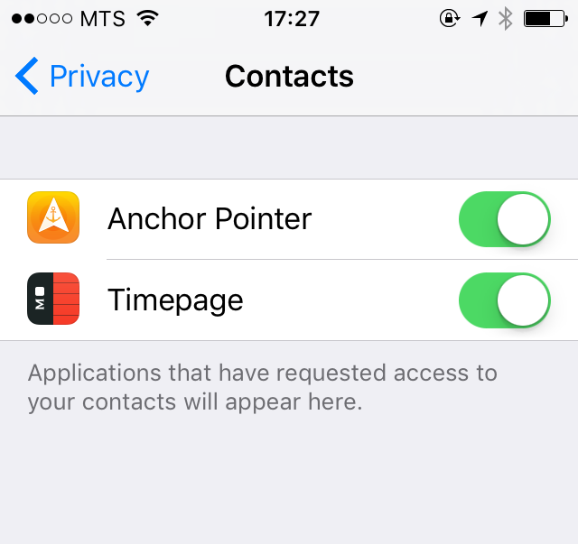

Nobody can track your location at any particular time.
Even if you see somebody at your Meet Friend list, to track this person you have to request Meet Friend connection by tapping person name in the list and wait until your friend accept the request:
When your friend accepted this request both of your devices will be point to each other until you (or your friend) will disconnect by tapping "End" button.
It works the same, if somebody would like to establish connection with you.
In order to see somebody in a list, you have to follow next rules:
1. Both of you should have Anchor Pointer installed.
2. Both of you should have iCloud email address in iOS contact list.
3. Both of you have to allow discoverability request when you open Meet Friend in the first time. You can turn this settings later, by opening iOS Settings > Privacy > Contacts and turn Anchor Pointer on.
If you decide that you don't like to use Meet Friend anymore and would like to hide your profile from all your friends, please open iOS Settings > Privacy > Contacts and turn Anchor Pointer off.
